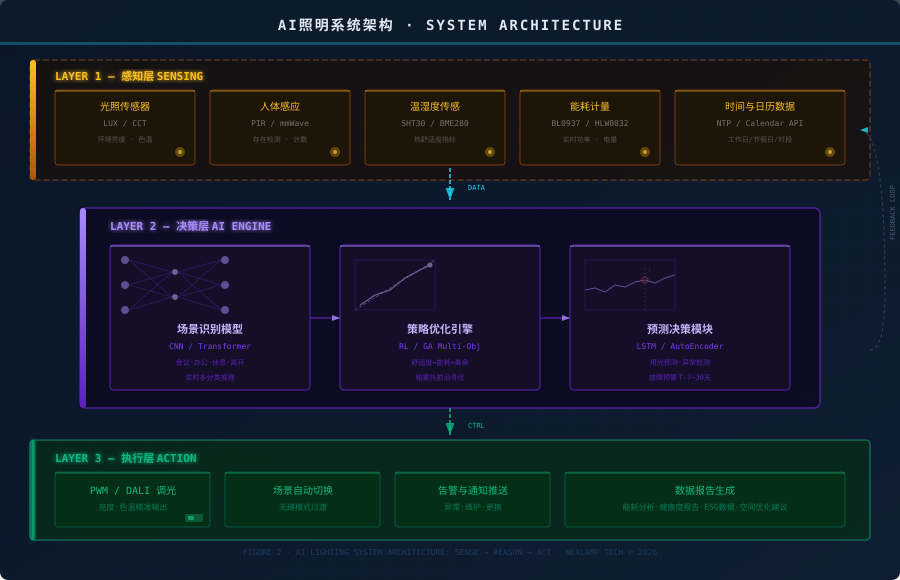
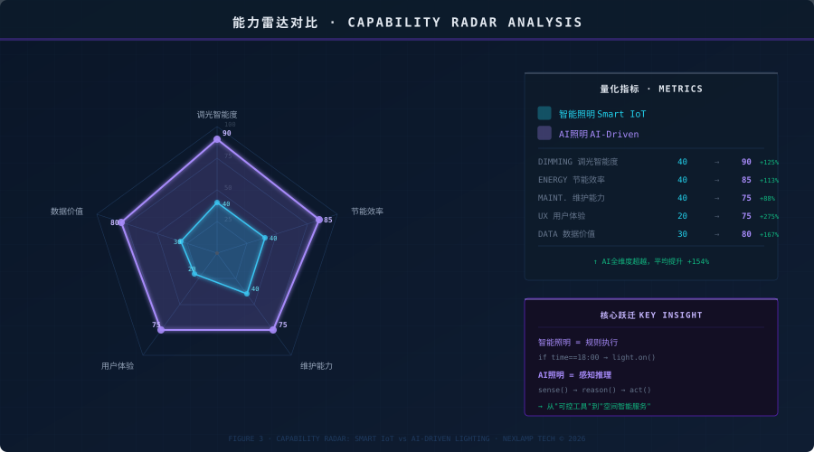

引言
照明行业经历了从白炽灯到LED的革命，又走过了从开关控制到APP智能控制的升级。现在，第三波变革正在到来——AI（人工智能）加持下的照明，不再是简单的"亮与灭"，而是让灯光学会"思考"。
当AI进入照明，最根本的变化是什么？从"人控灯"到"灯懂人"。灯光不再等待你的指令，而是主动感知环境、理解需求、自动调节。这篇文章将从技术架构、核心能力和实际场景三个维度，解读AI将给照明领域带来的深远变化。
照明技术的三次演进

如上图所示，照明技术经历了三个阶段：
- 传统照明（~2015年以前）：手动开关，固定亮度，无节能策略，人工维护
- 智能照明（2015~2024年）：APP/语音控制，定时调光，基础能耗监测，IoT互联
- AI照明（2025年~未来）：自适应调光，环境感知，预测性维护，节能30%以上
AI照明的技术架构

AI照明系统的核心是三层架构 + 反馈闭环：
1. 感知层——多源数据采集：光照传感器、人体感应（PIR/毫米波）、温湿度传感、能耗计量、日程数据，为AI决策提供实时环境画像。
2. 决策层——AI引擎三大能力：
- 场景识别：实时分类当前空间状态（会议/办公/休息/离开）
- 策略优化：基于强化学习进行多目标寻优（舒适度vs能耗vs寿命）
- 预测决策：时序预测预判用光需求，异常检测实现故障预警
三层之间通过反馈闭环连接——执行结果回传感知层，AI模型持续学习优化，越用越精准。
AI vs 传统智能照明：核心能力对比

从对比中可以看出，AI照明在五个维度实现了质的飞跃：
| 维度 | 传统智能照明 | AI照明 |
|---|---|---|
| 调光策略 | 预设规则触发 | 实时自适应，环境+行为+偏好融合 |
| 节能效果 | 10-20% | 30-50%，精细调度+预测优化 |
| 维护方式 | 故障后被动维修 | 预测性维护，提前告警 |
| 用户体验 | 需主动操作 | 无感体验，零操作自动适配 |
| 数据价值 | 基础状态监控 | 深度洞察，行为模式/空间优化/ESG |
AI照明的五大变化
变化一：从"规则驱动"到"自适应调光"
传统智能照明依赖if-then规则：如果18:00，则开灯；如果无人，则关灯。规则是固定的，但人的需求是动态的。AI照明通过持续学习用户习惯和环境变化，实现真正的自适应调光——同一间会议室，上午开会灯光偏亮偏冷白，下午讨论灯光自动柔和，无需任何人操作。
变化二：从"事后维修"到"预测性维护"
传统照明系统在灯具损坏后才报修，影响使用体验。AI通过分析驱动电源的电流波动、温度异常、光衰趋势，能在故障发生前7-30天预警，安排维护窗口，实现零中断运营。这对24小时运行的工厂和公共设施尤其关键。
变化三：从"粗放管理"到"精准节能"
AI不仅节能，还能生成空间维度的能耗热力图，告诉你哪个区域用光效率低、哪个时段存在浪费。结合自然光预测（天气预报+朝向计算），AI可以提前规划调光策略，最大化利用自然光，实现"光随天变"。
变化四：从"被动执行"到"主动服务"
灯光开始理解场景：当你走进办公室，灯光自动调到工作模式；午休时间，灯光渐暗助眠；视频会议时，灯光自动调到最佳出镜效果。这一切无需预设场景，AI通过行为识别自动判断。
变化五：从"设备管理"到"空间智能"
AI照明沉淀的数据（人流热力、空间使用率、能耗曲线）不再只服务于照明本身，而是成为建筑智能化的重要数据源——暖通系统根据人流调整空调，安防系统联动异常行为检测，ESG报告自动生成碳排放数据。照明从单一设备升级为空间智能基础设施。
常见问题
Q: AI照明是否需要更换现有灯具和驱动？
A: 不一定。如果现有灯具支持DALI/PWM调光协议，只需在控制层叠加AI网关和传感器即可。涂鸦平台的AI照明方案就支持在现有IoT基础上升级，无需大规模换灯。
Q: AI照明的节能效果能被量化验证吗？
A: 可以。AI系统会自动生成基准期（改造前）和优化期（改造后）的能耗对比报告，精确到每盏灯、每个区域、每个时段，节能数据可追溯可审计。
Q: AI照明对数据隐私有风险吗？
A: 正规AI照明方案采用边缘计算+本地决策架构，用户行为数据在本地处理，只上传脱敏的统计结果。选择通过隐私合规认证的供应商，如涂鸦平台已通过GDPR和多项国际隐私标准认证。
总结
如需AI照明方案咨询或涂鸦驱动电源选型建议，请联系耐利普科技：138-2549-6855。